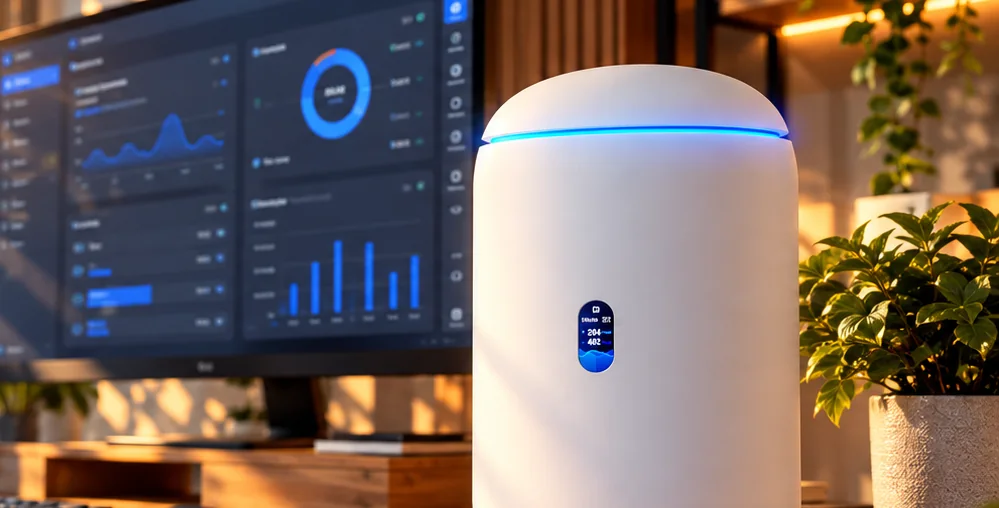

UniFi Dream Router 7 in Home AssistantUniFi Dream Router 7 in Home Assistant
Everything the UniFi Network app shows and switches, in Home Assistant: throughput, internet quality, WiFi, firewall, policies, VPN, ports, PoE, clients and every access point and switch behind the router. Local, no cloud, nothing installed on the router.Alles, was die UniFi-Network-App zeigt und schaltet, in Home Assistant: Durchsatz, Internetqualität, WLAN, Firewall, Richtlinien, VPN, Ports, PoE, Clients und jeder Access Point und Switch hinter dem Router. Lokal, ohne Cloud, nichts auf dem Router installiert.

Illustration: illustrated scene and made-up values, not a screenshot.Illustration: gezeichnete Szene und erfundene Werte, kein Screenshot.
What it doesWas sie kann
Every value and every switch uses the same interfaces as the UniFi web interface, tried out on a Dream Router 7 with a U7 Lite and a USW Flex 2.5G.Jeder Wert und jeder Schalter nutzt dieselben Schnittstellen wie die UniFi-Weboberfläche, ausprobiert an einem Dream Router 7 mit U7 Lite und USW Flex 2.5G.
Throughput of WiFi, LAN and internet, clients, latency, availability, public IP, provider and critical events.Durchsatz von WLAN, LAN und Internet, Clients, Latenz, Verfügbarkeit, öffentliche IP, Anbieter und kritische Ereignisse.
On and off, the password as a text field and a QR code to scan, for example on a tablet for guests.An und aus, das Passwort als Textfeld und ein QR-Code zum Scannen, zum Beispiel auf einem Tablet für Gäste.
Every firewall policy, traffic rule and route, port forward, content filter, Policy Engine policy, VPN server and UPnP as a switch.Jede Firewall-Regel, Traffic-Regel und Route, Portweiterleitung, Inhaltsfilter, Richtlinie, jeder VPN-Server und UPnP als Schalter.
Link speed and throughput per port, ports on and off with their settings restored, PoE on and off and a power cycle button.Verbindung und Durchsatz je Port, Ports an und aus mit wiederhergestellten Einstellungen, PoE an und aus und ein Neustart-Knopf.
Access points and switches sit under the router: clients per band, channel, utilization, transmit power, LED, restart, locate, firmware.Access Points und Switches hängen unter dem Router: Clients je Band, Kanal, Auslastung, Sendeleistung, LED, Neustart, Gerät suchen, Firmware.
Pick the phones and devices that matter: presence, internet access, reconnect, download, upload and signal for each.Wähle die Handys und Geräte, die zählen: Anwesenheit, Internetzugang, Neu verbinden, Download, Upload und Signal für jedes.
ControlSteuern
EntitiesEntitäten
All IDs start with the device name, for example sensor.dream_router_7_clients. Network values keep the IDs of UniFi Network Plus. Names in English and German.Alle IDs beginnen mit dem Gerätenamen, zum Beispiel sensor.dream_router_7_clients. Netzwerkwerte behalten die IDs von UniFi Network Plus. Namen auf Deutsch und Englisch.
| PlatformPlattform | EntityEntität | NoteHinweis |
|---|---|---|
| Sensor | wan_download wan_upload wlan_* lan_* clients internet_latency wan_availability critical_events | Like the Network dashboardWie das Network-Dashboard |
| Sensor | speedtest_download speedtest_upload speedtest_ping isp wan_ip wan_ipv6 | Plus a contract comparison if you enter your speedDazu ein Vertragsvergleich, wenn du deine Geschwindigkeit einträgst |
| Per deviceJe Gerät | cpu_load memory_usage cpu_temperature connected_clients online firmware restart locate status_led | Router, access points, switchesRouter, Access Points, Switches |
| Per band and portJe Band und Port | 2_4_ghz_clients channel transmit_power port_1 port_1_poe port_1_link_speed | Transmit power as a select: auto, high, medium, lowSendeleistung als Auswahl: automatisch, hoch, mittel, niedrig |
| Switch | wifi_* firewall_* traffic_rule_* route_* port_forward_* content_filter_* policy_* vpn_* upnp | One per WiFi network and rule, new ones appear without a restartJe WLAN und Regel einer, neue erscheinen ohne Neustart |
| Text, imageText, Bild | wifi_*_password wifi_*_qr_code | Disabled by defaultStandardmäßig deaktiviert |
| Light, timeLicht, Zeit | display night_mode_start night_mode_end | UniFi OS settings, need admin rights in UniFi OSUniFi-OS-Einstellungen, brauchen Admin-Rechte in UniFi OS |
| Per clientJe Client | device_tracker internet_access reconnect download upload wifi_signal | Only for the clients you pickNur für die Clients, die du auswählst |
SecuritySicherheit
UniFi OS uses a self-signed certificate. The integration remembers the one your router shows at setup and from then on talks to nothing else.UniFi OS nutzt ein selbstsigniertes Zertifikat. Die Integration merkt sich das, das dein Router bei der Einrichtung zeigt, und spricht danach mit nichts anderem.
Everything runs locally. Only the product pictures of your devices come from Ubiquiti's public device catalog, at most once a week.Alles läuft lokal. Nur die Produktbilder deiner Geräte kommen aus Ubiquitis öffentlichem Gerätekatalog, höchstens einmal pro Woche.
InstallInstallation
As a custom repository.Als benutzerdefiniertes Repository.
https://github.com/SH1FT-W/unifi-dreamrouter7Then pick your phones under Configure for presence and internet access.Danach unter Konfigurieren deine Handys für Anwesenheit und Internetzugang auswählen.
No cloud account, no YAML, nothing on the router.Kein Cloud-Konto, kein YAML, nichts auf dem Router.
Tested on a Dream Router 7 (UniFi OS 5.1, UniFi Network 10.6) with a U7 Lite and a USW Flex 2.5G. Other access points and switches work the same way.Getestet an einem Dream Router 7 (UniFi OS 5.1, UniFi Network 10.6) mit U7 Lite und USW Flex 2.5G. Andere Access Points und Switches funktionieren genauso.
Download the repository, copy its custom_components/udr7 folder into /config/custom_components/, restart Home Assistant and add the router.Lade das Repository herunter, kopiere den Ordner custom_components/udr7 nach /config/custom_components/, starte Home Assistant neu und füge den Router hinzu.
Good to knowGut zu wissen
No. Both can run side by side while you move automations and dashboards over; then remove the official one. Entity IDs differ, the network values of UniFi Network Plus keep theirs.Nein. Beide können nebeneinander laufen, während du Automationen und Dashboards umstellst; danach die offizielle entfernen. Die Entity-IDs unterscheiden sich, die Netzwerkwerte von UniFi Network Plus behalten ihre.
An API key reads values, but switching WiFi, rules, ports or LEDs needs the same login as the web interface. So the integration logs in with a local account.Ein API-Key liest Werte, aber WLAN, Regeln, Ports oder LEDs schalten braucht dieselbe Anmeldung wie die Weboberfläche. Deshalb meldet sich die Integration mit einem lokalen Konto an.
Only devices with an LED ring have a color; the Dream Router 7, U7 Lite and USW Flex 2.5G have a plain status LED, on or off. The router's display has a brightness, a color only consoles with a bezel.Nur Geräte mit LED-Ring haben eine Farbe; Dream Router 7, U7 Lite und USW Flex 2.5G haben eine einfache Status-LED, an oder aus. Das Display des Routers hat eine Helligkeit, eine Farbe nur Konsolen mit Bezel.
The internet port and the uplink of a switch have no on/off switch. Predefined zone rules cannot be switched, as in UniFi. Firewall rules you switch off are off, so think before you touch the one that lets Home Assistant in.Der Internet-Port und der Uplink eines Switches haben keinen Schalter. Vordefinierte Zonenregeln lassen sich wie in UniFi nicht schalten. Abgeschaltete Firewall-Regeln sind aus, also Vorsicht bei der, die Home Assistant hereinlässt.
No. The integration uses the interfaces of the UniFi Network and UniFi OS web interface. An update can change them; the entities then turn unavailable and the diagnostics show the error.Nein. Die Integration nutzt die Schnittstellen der Weboberfläche von UniFi Network und UniFi OS. Ein Update kann sie ändern; dann sind die Entitäten nicht verfügbar und die Diagnose zeigt den Fehler.
Download the diagnostics (Settings, Devices & services, UniFi Dream Router 7, three dots) and attach them to a GitHub issue. Address, login, MAC and IP addresses, names and WiFi passwords are left out.Diagnose herunterladen (Einstellungen, Geräte & Dienste, UniFi Dream Router 7, drei Punkte) und an ein GitHub-Issue hängen. Adresse, Zugangsdaten, MAC- und IP-Adressen, Namen und WLAN-Passwörter sind nicht enthalten.
UniFi Dream Router 7
One integration for the router and every UniFi device behind it, no cloud.Eine Integration für den Router und jedes UniFi-Gerät dahinter, keine Cloud.